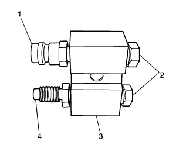
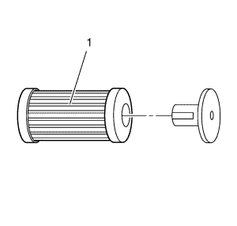

Descarga de agua
Herramientas especiales
| • | Lámpara de detección de fugas universal de 12 V BO 42220 |
| • | GE 41447 R-134A A/C, color de señal, caja de 24 |
| • | GE 45268 Juego del adaptador de descarga de agua del A/C |
Si desea informarse sobre herramientas regionales equivalentes, consultar Herramientas especiales .
Nota: La descarga de agua con el ACR 2000 no tiene como objetivo eliminar metal del sistema A/C.
La descarga de agua tiene como objetivo eliminar lo siguiente:
| • | Aceite polialquilenglicol (PAG) contaminado |
| • | Desecante, después de una avería en la bolsa de desecante |
| • | Sobrecarga de aceite PAG |
| • | Contaminación del refrigerante |
Configuración de descarga de agua directa

Nota: La descarga con refrigerante de flujo directo se recomienda en casos de refrigerante o aceite PAG contaminado.
Nota: Inspeccione y lubrique las juntas tóricas de ajuste del juego adaptador GE 45268. Consulte el Sustitución de la junta tórica del aire acondicionado
- Monte ambas juntas tóricas de ajuste GE 45268-9 sobre el adaptador GE 45268-10.
- Monte la junta tórica de ajuste GE 45268-8 sobre el lado de succión del adaptador GE 45268-10.
- Monte la junta tórica de ajuste GE 45268-7 sobre el lado de descarga del adaptador GE 45268-10.
Configuración de descarga de agua inversa
Nota:
| • | La descarga con refrigerante de flujo inverso se recomienda en casos avería de la bolsa de desecante. Sustituya el conjunto del deshidratador del condensador/receptor una vez completada la descarga de agua del A/C y realice el siguiente procedimiento: |
- Monte ambas juntas tóricas de ajuste GE 45268-9 sobre el adaptador GE 45268-10.
- Monte la junta tórica de ajuste GE 45268-8 sobre el lado de succión del adaptador GE 45268-10.
- Monte la junta tórica de ajuste GE 45268-7 sobre el lado de descarga del adaptador GE 45268-10.
Procedimiento de descarga de agua
Nota: Una mayor temperatura ambiente o del motor reduce el tiempo de recuperación del refrigerante durante el procedimiento de descarga del A/C.
- Recubra el agente frigorífico. Consultar Recuperación y recarga del agente frigorífico .
- Retire la válvula de expansión térmica (TXV). Consultar Sustitución de la válvula de expansión térmica de evaporador de aire acondicionado → 2.0L Diésel LLW, LNP → LDE, LLU, LXT, LXV, L2W y 2H0 .
- Monte el perno de la TXV sobre el adaptador GE 45268-115.
- Monte nuevas arandelas de estanqueidad sobre el núcleo evaporador. Consultar Sustitución de la junta tórica del aire acondicionado .
- Monte el adaptador GE 45268-115 en lugar de la TXV.
Precaución:Consulte Precaución con las fijaciones en la sección Prólogo.
- Monte los pernos de soporte de TXV y apriételos hasta 15 N·m (11 lib. pulg.).
- Monte nuevas arandelas sobre la tubería de líquido y la manguera de succión. Consultar Sustitución de la junta tórica del aire acondicionado .
- Conecte la tubería de líquido y la manguera de succión al adaptador GE 45268-115.
- Monte la tuerca de acoplamiento de bloque TXV y apriétela hasta 19 N·m (14 lib. pulg.).
- Desmonte el compresor de A/C. Consultar Sustitución de compresor de aire acondicionado → 2.0L diesel LNP → 1.4L LUJ → 1.6L LXT, L2W → LDE, LLU LXV y 2H0 → 2.0L Diésel LLW .

- Desmonte el filtro de refrigerante del A/C (1). Consultar Sustitución del desecante del refrigerante del aire acondicionado .
Nota: El filtro en el interior del adaptador GE 45628-1 requiere mantenimiento. Desmonte y descarte la válvula de retención del filtro.
- Realice las labores de mantenimiento necesarias en el filtro antes de cada descarga de agua.
Nota: Asegúrese de que los puertos de succión y descarga en J 45268-10 corresponden a los puertos de succión y descarga en el conjunto de la manguera del compresor.
- Monte nuevas arandelas de estanqueidad sobre el compresor de A/C y la manguera del condensador. Consultar Sustitución de la junta tórica del aire acondicionado . Asegúrese de que los puertos de succión y descarga del adaptador GE 45268-10 corresponden a los puertos de succión y descarga en la manguera del compresor de A/C al condensador.
- Monte el adaptador del filtro GE 45268-10 en la manguera del compresor de A/C al condensador.
- Conecte el filtro GE 45268-1 al adaptador J 45268-7.
- Conecte la manguera azul del dispositivo de llenado del A/C al adaptador GE 45268.
- Conecte la manguera roja del dispositivo de llenado del A/C al adaptador GE 45268.
- Desconecte la manguera azul del dispositivo de llenado del A/C al adaptador GE 45268-1.
- Desconecte el adaptador GE 45268-1 del adaptador GE 45268-10.
- Desmonte el adaptador GE 45268-10 de la manguera del compresor de A/C al condensador.
Nota: La descarga de agua eliminará todo el aceite PAG del sistema de A/C. El sistema de A/C debe rellenarse con la cantidad correcta de aceite PAG.
- Si vuelve a montar el compresor de A/C desmontado, realice el siguiente procedimiento:
| • | Drene el aceite PAG del compresor de A/C. Gire el eje de entrada del compresor para ayudar en el drenaje de aceite PAG del compresor. |
| • | Añada una botella de color de señal GE 41447. |
Nota: La descarga de agua eliminará el tinte fluorescente de detección de fugas del sistema de A/C.
- Monte el compresor de A/C. Consultar Sustitución de compresor de aire acondicionado → 2.0L diesel LNP → 1.4L LUJ → 1.6L LXT, L2W → LDE, LLU LXV y 2H0 → 2.0L Diésel LLW .
- Monte un nuevo filtro de refrigerante del A/C. Consultar Sustitución del desecante del refrigerante del aire acondicionado .
- Retire la tuerca de ajuste del bloque de la TXV.
- Desconecte la tubería de líquido y la de succión del adaptador GE 45268-115.
- Desmonte los tornillos de la TXV de retención del adaptador GE 45268-115.
- Desmonte el adaptador GE 45268-115.
- Inspeccione la TXV en busca de residuos. Limpie o sustitúyala según estime necesario.
- Monte la TXV. Consulte el Sustitución de la válvula de expansión térmica de evaporador de aire acondicionado → 2.0L Diésel LLW, LNP → LDE, LLU, LXT, LXV, L2W y 2H0.
- Evacúe y recargue el sistema de A/C. Consultar Recuperación y recarga del agente frigorífico .
- Ajustes de comprobación de estanqueidad mediante la lámpara BO 42220.
| © Copyright Chevrolet. Reservados todos los derechos |